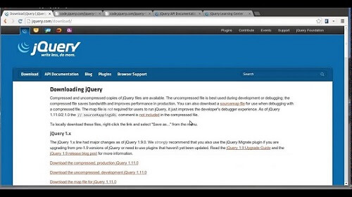
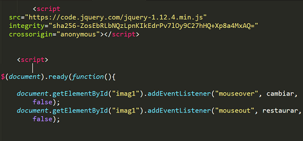

¿Qué es jQuery?
jQuery es una biblioteca de JavaScript que simplifica la forma de desarrollar aplicaciones web. Las aplicaciones que utilizan jQuery suelen necesitar menos tiempo y menos código que las aplicaciones hechas con JS puro. Por este motivo, jQuery es muy popular y se utiliza en montones de páginas web.
jQuery permite manipular elementos del DOM (textos, imágenes, enlaces, etc.) , cambiar el diseño CSS o realizar peticiones Ajax utilizando instrucciones simples, a través de un código muy conciso y sencillo.
Si se escribe menos código, los errores serán menos frecuentes, y por esto, la librería se hizo muy popular desde su aparición en el año 2006.
¿Comó implementar jQuery en JavaScript?
jQuery es una biblioteca de JavaScript. Dicho de otro modo, es un simple fichero con extensión .js que contiene objetos y funciones escritas en JavaScript. Este código pone a tu disposición un montón de funciones prefabricadas que podemos utilizar en nuestros proyectos.
Para agregarlo debemos de descargar (primera imagen) o copiar el SCRIPT (segunda imagen) desde el sitio oficial de jQuery.
Luego en otra etiqueta SCRIPT comenzamos a escribir la primera linea de nuestro código jQuery $(document).ready(function(){}) , como se muestra en la segunda imagen. Dentro de esta función escribiremos todo nuestro código jQuery, recuerda que sin esta función tu código jQuery no funcionará.

